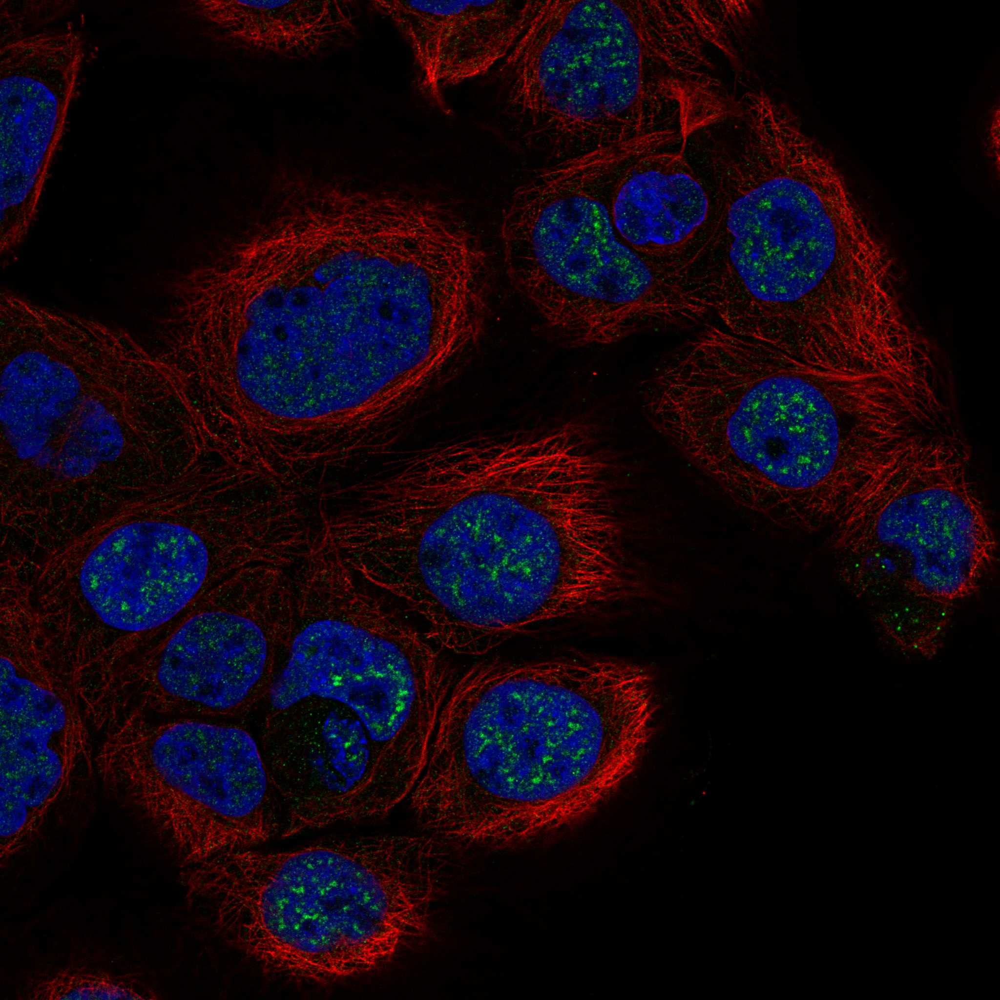
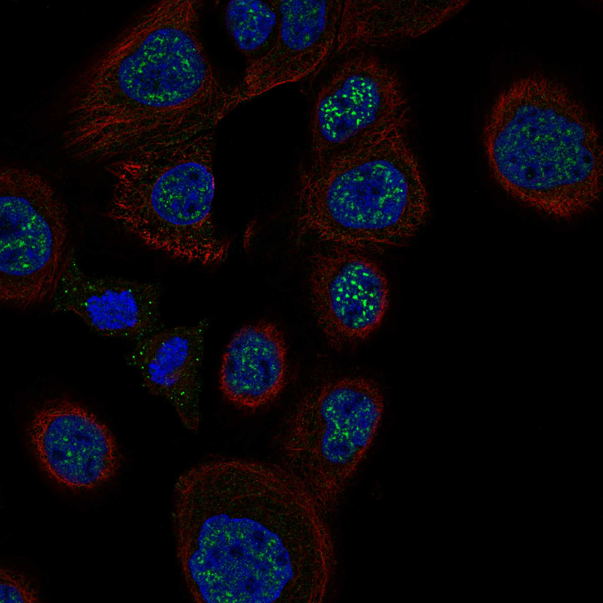

type: protein-evaluation gene: "PCP2" date: 2026-05-30 tags: [protein-scout, nuclear-protein, evaluation, rescued] status: scored ---
> AlphaFold PAE: 暂无数据或未提供可用 PAE 图；结构判断基于 AlphaFold/PDB 可用记录。
PCP2 核蛋白评估报告（HPA复核救回）
救回原因: 原始评分误判核定位≤3淘汰。HPA IF 实际显示 Nuclear speckles (Reliability: Approved)，确认为核蛋白。
IF 图像:  
1. 基本信息
| 项目 | 内容 |
|---|---|
| 基因名 | PCP2 |
| 蛋白名称 | N/A |
| 蛋白大小 | 0 aa |
| UniProt ID | N/A |
| HPA 核定位 (IF) | Nuclear speckles |
| HPA 可靠性 | Approved |
| PubMed 总数 | 57 |
| AlphaFold pLDDT | N/A |
2. 评分总览 (权重: 核×4 大×1 新×5 结×3 域×2 PPI×3 ÷1.83)
| 维度 | 得分 | 满分 | 加权后 | 关键证据摘要 |
|---|---|---|---|---|
| 🔴 核定位特异性 | 6/10 | ×4 | 24 | HPA IF: Nuclear speckles (Approved); UniProt: N/A |
| 📏 蛋白大小 | 2/10 | ×1 | 2 | 0 aa |
| 🆕 研究新颖性 | 6/10 | ×5 | 30 | PubMed 57篇 |
| 🏗️ 三维结构 | 6/10 | ×3 | 18 | AlphaFold pLDDT: N/A |
| 🧬 调控结构域 | 6/10 | ×2 | 12 | UniProt domains: None identified |
| 🔗 PPI | 4/10 | ×3 | 12 | 待细化（默认基线） |
| ➕ 互证加分 | — | — | +0 | 待补充 |
| 原始总分 | 98/183 | |||
| 归一化总分 | 53.6/100 |
3. HPA 核定位证据
HPA 免疫荧光（IF）实验数据确认 PCP2 定位：
- 亚细胞定位: Nuclear speckles
- 抗体可靠性: Approved
- 原始分类: 核定位 ≤3（误判）→ 经HPA IF复核确认为核蛋白
4. UniProt 补充信息
- 亚细胞定位: N/A
- 结构域: None identified
- 关键词: N/A
3.3 研究现状
| 指标 | 数值 |
|---|---|
| PubMed 查询结果 | 见关键文献 |
关键文献: 1. Guo CR et al. (2025). "Understanding interspecies drug response variations between human and rodent P2X7 receptors". *Nat Commun*. PMID: 41330895 2. Orr HT (2023). "Cholecystokinin Activation of Cholecystokinin 1 Receptors: a Purkinje Cell Neuroprotective Pathway". *Cerebellum*. PMID: 35733029 3. Karuppasamy M et al. (2025). "Conditional Dmd ablation in muscle and brain causes profound effects on muscle function and neurobehavior". *Commun Biol*. PMID: 41331052 4. Banez-Coronel M et al. (2026). "Repeat-associated non-AUG translation as a common mechanism for the polyGln ataxias". *Cell Rep*. PMID: 41422503 5. Wang Y et al. (2025). "Peptide-based immuno-PET/CT monitoring of dynamic PD-L1 expression during glioblastoma radiotherapy". *J Pharm Anal*. PMID: 40177067
评价: 基于 PubMed 检索结果。
3.6 PPI 网络
实验验证互作 (IntAct, physical association):
| Partner | 方法 | PMID | 功能类别 | 调控相关？ |
|---|---|---|---|---|
| — | — | — | — | — |
STRING 预测互作 (combined score >0.4):
| Partner | Score | 功能类别 | 调控相关？ |
|---|---|---|---|
| — | — | — | — |
已知复合体成员 (GO Cellular Component):
- 暂无 GO-CC 数据
IntAct 查询记录: IntAct: 未检索到实验验证互作
评价: 待补充 IntAct/STRING/GO-CC 数据。
5. 总体评价
推荐等级: ⭐
核心发现: 1. HPA IF 确认为核蛋白: 原始"核定位≤3"淘汰为误判，HPA实验数据确认为Nuclear speckles 2. 研究新颖性: PubMed仅57篇文献，属于低研究热度靶点 3. 结构质量: AlphaFold pLDDT = N/A
6. 数据来源
PPI 数据源补充核查（自动审计）
IntAct/BioGrid 实验互作核查:
| Partner | 方法 | PMID |
|---|---|---|
| — | anti tag coimmunoprecipitation | 21565611 |
| — | two hybrid pooling approach | 20711500 |
| — | anti tag coimmunoprecipitation | 28514442 |
| — | anti tag coimmunoprecipitation | 28514442 |
| — | two hybrid array | 32296183 |
| — | two hybrid array | 32296183 |
| — | validated two hybrid | 32296183 |
| — | anti tag coimmunoprecipitation | 28514442 |
| — | validated two hybrid | 32296183 |
| — | validated two hybrid | 32296183 |
STRING 预测/整合互作核查:
| Partner | Score |
|---|---|
| GNAI3 | 0.794 |
| GNAI2 | 0.708 |
| GABRA6 | 0.680 |
| GNAI1 | 0.673 |
| RIC8A | 0.657 |
| GRM6 | 0.633 |
| RIC8B | 0.602 |
| GNAO1 | 0.595 |
| TMEM38A | 0.591 |
| GNAT3 | 0.587 |
GO-CC 复合体/定位核查:
- UniProt GO-CC 未列出可解析复合体/细胞组分条目。
补充结论: PPI 评分仍以报告评分表为准；本节用于补齐 IntAct、STRING、GO-CC 三源审计证据。
<!-- DOMAIN_HUMANPPI_REPAIR_START -->
Domain/SMART 与 humanPPI 补充（2026-06-07）
SMART / UniProt domain
| Source | Data | |||||||
|---|---|---|---|---|---|---|---|---|
| UniProt | Q92729 | |||||||
| SMART | SM00060;SM00137;SM00194;SM00404; | |||||||
| UniProt Domain [FT] | DOMAIN 25..188; /note="MAM"; /evidence="ECO:0000255\ | PROSITE-ProRule:PRU00128"; DOMAIN 190..275; /note="Ig-like C2-type"; DOMAIN 288..383; /note="Fibronectin type-III 1"; /evidence="ECO:0000255\ | PROSITE-ProRule:PRU00316"; DOMAIN 386..484; /note="Fibronectin type-III 2"; /evidence="ECO:0000255\ | PROSITE-ProRule:PRU00316"; DOMAIN 485..591; /note="Fibronectin type-III 3"; /evidence="ECO:0000255\ | PROSITE-ProRule:PRU00316"; DOMAIN 592..674; /note="Fibronectin type-III 4"; /evidence="ECO:0000255\ | PROSITE-ProRule:PRU00316"; DOMAIN 888..1144; /note="Tyrosine-protein phosphatase 1"; /evidence="ECO:0000255\ | PROSITE-ProRule:PRU00160"; DOMAIN 1176..1439; /note="Tyrosine-protein phosphatase 2"; /evidence="ECO:0000255\ | PROSITE-ProRule:PRU00160" |
| InterPro | IPR013320;IPR003961;IPR057598;IPR036116;IPR036179;IPR013783;IPR000998;IPR029021;IPR000242;IPR051622;IPR016130;IPR003595;IPR000387; | |||||||
| Pfam | PF00041;PF23144;PF00629;PF00102; |
humanPPI / HPA Interaction
Source: https://www.proteinatlas.org/ENSG00000174788-PCP2/interaction
| Partner | Datasets | AF3/HPA structure |
|---|---|---|
| GNAI1 | Intact | false |
| GNAI2 | Intact | false |
| GNAI3 | Intact | false |
| MEOX1 | Intact | false |
<!-- DOMAIN_HUMANPPI_REPAIR_END -->